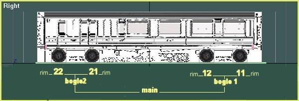
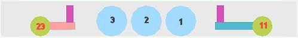
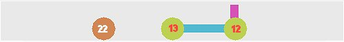

A Coach Made With GMax
by Richard Osborne
Chapter 12: More about hierarchies
I'll try to explain hierarchies as applied to rolling stock & locomotives. Look again at the diagram for a bogie coach.

The principle is Wheels11 or 21 in front of the bogie pivot, wheels12 or 22 on the bogie pivot, wheels13 or 23 behind the bogie pivot relative to forward motion. They must run 11 - 23; 1-4 or they'll turn backwards. I've normally used wheels12 or 22 behind the pivot, it works but if I were pedantic I'd use 13 & 23. The sequence tells MSTS to move the wheels laterally as the bogie swings. TSM leads you to believe that a third bogie is possible - it isn't.
If we apply this to a steam locomotive the same sequence must be used; again the diagrams are from the right, the way TSM shows the side view. Take the most complicated first, a 4-6-4, or 2-3-2 if you're on the Continent. Wheels11 - wheels23 are animated by MSTS, driving wheels1 - 4 must be animated manually.
The linking here will be:
- wheels11 & wheels13 linked to bogie1
- bogie1 linked to main
- wheels1, wheels2, wheels3 linked to main
- wheels21 & wheels 23 linked to bogie 2
- bogie2 linked to main.
A pony truck, bissel if you're French, obviously only has one axle. A trailing truck, as in a Pacific, will have that axle behind the pivot. The wheels will be wheels23. Although, technically, a pony truck isn't a bogie MSTS will be looking for bogie1 or bogie2; in truth it doesn't know very much about steam locomotives. Many locomotives had radial axleboxes, ignore that & give those locos a bogie. If you don't want it to show make it very small or give it a transparent texture. It must be in the list & have its pivot in the right place to function.
The linking here will be:
- wheels11 & wheels13 linked to bogie1
- bogie1 linked to main
- wheels1, wheels2, wheels3 linked to main
- wheels23 linked to bogie 2
- bogie2 linked to main.
Pony trucks at both ends, a Prairie in this case, will use wheels11 & wheels23.

The linking here will be:
- wheels11 linked to bogie1
- bogie1 linked to main
- wheels1, wheels2, wheels3 linked to main<
- wheels23 linked to bogie 2
- bogie2 linked to main.
A 4-6-0, for instance, will only have bogie1; no reference will be made to bogie2.
The linking here will be:
- wheels11 & wheels13 linked to bogie1
- bogie1 linked to main
- wheels1, wheels2, wheels3 linked to main
Conversely an 0-4-4 will only have a trailing bogie.
The linking here will be:
- wheels1, wheels2 linked to main
- wheels21 & wheels23 linked to bogie 2
- bogie2 linked to main.
Diesel & electric locos have their own problems. Most designers seem to treat them as a coach with wheels11 etc. Although this is fine it has a major problem - the wheels don't spin or slide, they're not driven. It's better to make them wheels1, wheels2 etc. & animate them. BUT that gives us a problem, MSTS only allows up to wheels5 - for 10 coupled steam locos. A sensible compromise is to mix driven & undriven wheels, making an A1A - A1A instead of a Co - Co. For a Bo - Bo use wheels1 - 4 animated manually.
The linking here will be:-
- wheels1, wheels12 & wheels2 linked to bogie1
- bogie1 linked to main
- wheels3, wheels22 & wheels4 linked to bogie 2
- bogie2 linked to main.
Two other special cases for coach models, the first a 12-wheeled coach example; rare in Britain but common in the USA.
The linking here will be:
- wheels11, wheels12 & wheels13 linked to bogie1
- bogie1 linked to main
- wheels21, wheels22 & wheels 23 linked to bogie 2
- bogie2 linked to main.
The other is for a 6 wheeled coach, common enough in Britain during the 19th century & still used on the Continent. It's only worth making a bogie for a long vehicle, a 6 wheeled tender doesn't have much sideways movement for the centre axle. The trick is to pivot the bogie on the leading axle, leaving the centre wheel to move sideways. Again make the bogie transparent. Make sure you leave sufficient room for the centre wheels to move without fouling the centre axleguards. You can't judge the side movement until you run the coach over tight curves or turnouts; another reason for looking at your model in MSTS while it's still 'work in progress'.

The linking here will be:
- wheels12 & wheels13 linked to bogie1
- bogie1 linked to main
- wheels22 linked to main.
Some designers have bogies on 4 wheeled stock; absolutely no need - the wheels don't move sideways relative to the body; just link the wheels to main. Wheels must be in sequence - I've used wheels11, wheels12; wheels11, wheels21; wheels11, wheels23.
Of course there are extreme cases, wagons with 4 bogies, articulated locos, locos nicknamed 'Centipede' etc. Most of these would be compounds of 2 or 3 models in MSTS - well outside the scope of this tutorial.